트리온의 ‘너의 교수님은?’을 단순한 교수 추천 서비스로 소개하지 않겠습니다. 저희가 만드는 것은 대학생이 연구 고민을 질문으로 구체화하고, 공식 근거로 대화할 교수를 찾은 뒤, 준비와 조언을 다음 행동까지 이어가는 하나의 여정입니다. 오늘은 실제로 작동하는 부분과 검증하며 발견한 한계를 함께 보여드리겠습니다.
문제 가설실제 학생 검증 현재 n=0
정보는 많지만, 행동으로 바꾸는 구간이 끊깁니다
정보 부족보다 ‘누구에게 무엇을 묻고, 받은 조언으로 무엇을 바꿀지’가 더 어렵다고 정의했습니다.
01
교수 선택프로필과 논문을 봐도 누구를 왜 찾아갈지 판단하기 어렵다.
02
대화 준비읽은 정보를 질문·이메일·면담 안건으로 바꾸기 어렵다.
03
조언 반영교수의 피드백이 연구 수정과 다음 행동으로 이어지지 않는다.
근거 · 팀 문제정의 문서 및 2026-08-01 MVP 점검 · 보편적 대학생 문제로 일반화하지 않음
저희가 정의한 문제는 정보의 부재보다 정보와 행동 사이의 단절입니다. 첫째 누구를 왜 만날지, 둘째 무엇을 질문하고 어떻게 연락할지, 셋째 조언을 받은 뒤 무엇을 바꿀지가 각각 끊겨 있습니다. 다만 실제 학생을 대상으로 빈도와 중요도를 확인하지 않았기 때문에 이 슬라이드는 측정 결과가 아니라 문제 가설입니다.
기획 범위 확인됨DEMO DATA
타깃을 ‘첫 연구 대화를 준비하는 대학생’으로 좁혔습니다
대학생 전체가 아니라, 관심은 있지만 연구주제·교수 연락·후속 행동을 처음 설계하는 장면에 집중합니다.
가상 발표 시나리오
“친환경 식품과 AI에 관심은 있는데, 누구에게 무엇을 물어봐야 할지 모르겠어요.”
실제 사용자 성과가 아닌 발표 재현용 입력입니다.
사용자
학부 연구·교수 상담을 처음 시도
관심 분야는 있으나 질문과 연락 준비 경험은 적은 학생
필요한 변화
검색 결과가 아니라 첫 행동
연구 질문, 공식 교수 근거, 면담 준비와 다음 행동까지 연결
해커톤 경계
대학생 중심으로 평가
다른 사용자·다른 대학 확장은 해커톤 이후 검토
근거 · UNIKER 공지의 대학생 타깃 기준 · ‘너의 교수님은?’ MVP 한 장 기획
공지의 평가 기준에 맞춰 타깃을 넓히지 않고 대학생의 구체적인 장면으로 좁혔습니다. 관심 분야는 있지만 첫 연구주제와 교수 상담을 시작하지 못하는 학생입니다. 오늘 데모에서는 친환경 식품과 AI에 관심 있는 가상 사례를 사용하며, 이 사례는 실제 사용자 결과가 아닌 DEMO DATA입니다.
대학생이 실제로 겪는 핵심 흐름학생 여정 가설 · 사용자 검증 현재 n=0
대학생은 ‘교수 추천’보다 다음 행동으로 이어지는 흐름이 필요합니다
막연한 관심이 연구 질문·공식 교수 근거·첫 대화·성장 기록으로 끊기지 않고 이어져야 합니다.
01 · 시작
막연한 관심·고민
관심 분야는 있지만 무엇을 질문할지 아직 모호합니다.
나의 조건→02 · 만들다
연구 질문 구체화
문제·대상·방법·기간을 정리해 비교 가능한 질문을 만듭니다.
연구 후보→03 · 찾다
교수 3인 비교
주전공 교수 2명과 같은 학교 타학과 교수 1명을 비교합니다.
선택 근거→04 · 근거
연구·논문 확인
공식 프로필과 논문에서 왜 연결됐는지 직접 확인합니다.
공식 정보→05 · 잇다
첫 대화 준비
읽은 근거를 질문·이메일·면담 안건으로 바꿉니다.
학생이 직접 실행→06 · 반영
조언·성장 기록
받은 조언을 수정안·7일 행동·포트폴리오로 남깁니다.
다음 행동
핵심좋은 추천 한 번이 아니라, 처음 고른 주제·교수·논문이 끝까지 같은 탐색 여정으로 이어져야 합니다.
근거 경계 · 팀 문제정의와 MVP 유저플로우 QA · 실제 대학생 과업 검증은 다음 단계
대학생은 처음부터 만나고 싶은 교수가 명확하지 않습니다. 막연한 관심과 고민을 연구 질문으로 구체화하고, 관련 교수를 비교한 뒤, 공식 연구와 논문을 확인해 실제 첫 대화를 준비해야 합니다. 대화 이후에는 받은 조언을 연구 수정안과 다음 행동으로 남겨야 합니다. 따라서 저희가 중요하게 보는 것은 좋은 추천 한 번이 아니라, 처음 고른 주제와 교수, 논문이 끝까지 같은 탐색 여정으로 이어지는 것입니다. 다만 이 흐름은 현재 팀의 문제 가설이며 실제 학생 과업 검증은 아직 0명입니다.
아이디어 구조
찾다 · 만들다 · 잇다가 하나의 행동 루프를 만듭니다
AI 추천 하나가 아니라, 어디서 시작해도 교수와의 첫 대화와 다음 행동으로 수렴하는 구조입니다.
01
나의 교수님 · 찾다
누구와 왜 대화할까?
전공·관심·진로를 나눠 보고, 공식 근거가 다른 세 관점의 교수 후보를 확인합니다.
02
전공 진화 실험실 · 만들다
무엇을 연구 질문으로 만들까?
한 번에 한 질문씩 조건을 좁히고, 전략이 다른 연구 후보 두 개를 비교합니다.
03
교수님 퀘스트 · 잇다
무엇을 준비하고 남길까?
논문 이해·첫 문장·메일 점검·다음 행동을 학생이 직접 실행하도록 돕습니다.
창의성의 중심은 개별 기능보다 대학생의 실제 행동이 이어지는 조합입니다.
근거 · ‘너의 교수님은?’ 핵심 기획 · 2026-08-01 배포본 홈 및 주요 경로 확인
저희 아이디어의 차별점은 AI가 교수를 추천하는 기능 하나가 아닙니다. 찾다에서 누구와 왜 대화할지 판단하고, 만들다에서 자신의 고민을 연구 질문으로 바꾸며, 잇다에서 실제 연락과 면담 전후 행동을 준비합니다. 재미 요소도 장식이 아니라 학생이 작은 행동을 하나씩 완주하는 퀘스트 경험에 두었습니다.
2026.07.26 멘토링 반영초기안 → 시연안 → 현재안
아이디어 추천을 넘어 교수와의 실제 행동 루프로 성장했습니다
멘토링은 기능 승인이 아니라, 무엇을 덜고 어디까지 연결할지 다시 결정한 분기점이었습니다.
01
초기 기획아이디어 생성 중심
점수형 아이디어·교수 궁합 표현
레거시 3개 아이디어 랩과 기능 확장
교수·퀘스트는 가상 데이터, 면담 후 반영 루프 부재
→
02
멘토링 당시공동설계 MVP
한 번에 한 질문, 후보 정확히 2개
숫자 점수 제거·질적 비교로 전환
로컬 작동, 교수 데이터 연결은 진행 중
→
03
멘토링 이후교수 행동 E2E
교수 레이더 → 퀘스트 → Mentor Loop
논문 이해·질문·A4 면담자료로 재설계
조언을 수정 전후·7일 행동으로 연결
제품의 끝점아이디어 선택→교수 근거·면담 준비·후속 행동
판단 방식점수·순위·궁합→후보 2개 정성 비교·공식 근거
교수 데이터가상 교수 후보→공식 교수 1,051명·대표 3건 검수
논문의 역할링크 추천→이해·질문·A4 설계 일부 미완료
개발 우선순위부가 기능 확장→실제 데이터 E2E·연결 결함 검증
완료 기준화면 구현→E2E·새로고침·390px·수집기 테스트
해석 주의멘토는 교수 행동 지원 방향을 긍정적으로 봤지만 현재 전체 E2E를 최종 승인한 것은 아닙니다.
초기 기획에는 점수형 아이디어와 교수 궁합 표현, 세 개 아이디어 랩처럼 생성 기능을 넓히는 요소가 있었습니다. 교수 후보와 퀘스트 개념은 있었지만 가상 데이터 중심이었고, 면담 뒤 피드백을 반영하는 루프는 없었습니다. 멘토링 당시에는 이미 한 번에 한 질문, 후보 두 개, 무점수 비교까지 좁혀 시연했습니다. 이후 제품의 끝점을 공식 근거로 교수를 찾고, 논문을 이해와 질문으로 바꾸며, 면담 조언을 수정 전후와 7일 행동으로 연결하는 데 두었습니다. 현재 공식 교수 데이터와 핵심 화면은 연결했지만 논문 이해 메모와 A4 한 페이지는 아직 완주 조건입니다. 이것은 성장 과정이지 전체 MVP의 최종 승인이라는 뜻은 아닙니다.
2026.07.27 데이터 스냅샷
공식 교수 사실과 AI 제안을 분리했습니다
AI는 학생의 조건을 구조화하지만, 교수의 소속·연구분야·논문은 대학 공식 프로필로 되돌아가 확인하게 설계했습니다.
115단국대 학과·전공 수집 시도
1,051정규화한 공식 교수
816공식 프로필 연구 근거 확인 77.6%
235공식 프로필 미기재 22.4%
수치 경계 · 77.6%는 MVP 완성률이 아니라 공식 프로필에서 연구 근거가 확인된 교수 비율입니다. 현재 검증 범위는 단국대 한 곳입니다.
01 SOURCE
대학 공식 학과·교수 페이지
공개된 사실과 접근 상태만 수집하고 출처 URL을 보존
02 NORMALIZE
교수·학과·연구실적 정규화
중복을 정리하고 미기재·수집 실패를 서로 다른 상태로 유지
03 EVIDENCE
안정 식별자와 근거 ID 연결
추천 이유에서 공식 원문으로 역추적할 수 있는 구조
04 UI
역할이 다른 교수 후보로 표시
우열·궁합·모집 가능성을 추정하지 않고 직접 확인할 점을 함께 제시
근거 · 단국대 교수 DB · 교수-학과 연결 1,256건, 공식 프로필 연구실적 55,899건은 보조 지표
신뢰성을 위해 AI가 제안하는 내용과 대학이 공개한 교수 사실을 분리했습니다. 단국대 115개 학과와 전공을 시도해 교수 1,051명을 정규화했고, 816명은 공식 프로필에서 연구 근거를 확인했습니다. 235명은 정보가 없다고 단정하지 않고 공식 프로필 미기재 상태로 보존했습니다. 77.6%는 제품 완성률이 아니라 한 대학 공식 프로필의 근거 확인 비율입니다.
첫 화면에서 학생은 탐색 방식과 학교, 전공, 관심 키워드, 관련 수업, 기간과 데이터 접근 조건을 입력합니다. 이후 한 화면에 한 질문씩 총 다섯 번 맥락을 확인합니다. AI가 곧바로 답을 내는 대신 학생이 확인한 사실과 제안, 추가 확인할 조건을 분리해 두 후보를 만들 준비를 합니다. 현재 입력과 질문 경로는 배포본에서 작동합니다.
MVP ② · 비교 화면 작동기간 제약 검증 중
점수 대신 근거·데이터·방법·범위로 후보 둘을 비교합니다
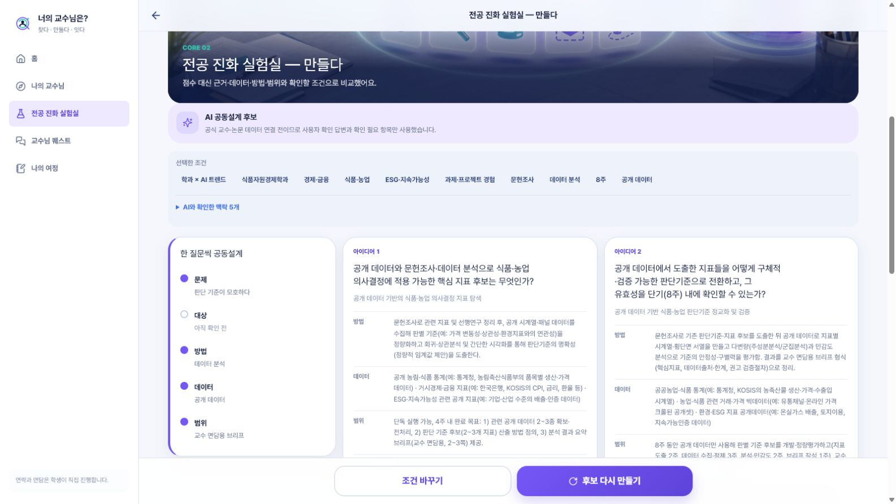
/result · 1:1 비교
안전 축소형 A ↔ 차별 심화형 B
‘무엇이 더 좋은가’가 아니라 지금 조건에서 무엇을 확인해야 하는지 보여줍니다.
01문제·연구질문
같은 관심사를 서로 다른 범위와 관점으로 구체화
02근거·데이터
사용 가능한 공개 데이터와 추가 확인이 필요한 근거 분리
03방법·기간
실행 방법과 예상 범위를 학생의 제약 조건에 맞춰 비교
04위험·첫 행동
막힐 지점과 첫 30분 안에 할 수 있는 다음 행동 제시
발견한 결함
8주를 선택했지만 한 후보가 4주 범위로 생성된 사례가 있어 생성 후 제약 검증이 필요합니다.
현재 상태 · 두 후보의 질적 비교는 작동 · 기간 일치와 넓은 입력의 일반화는 다음 품질 게이트
결과 화면은 점수 순위를 만들지 않습니다. 바로 시작하기 쉬운 안전 축소형과 차별성을 키운 심화형을 문제, 연구 질문, 근거와 데이터, 방법, 기간, 위험, 첫 행동까지 같은 기준으로 비교합니다. 다만 8주를 입력했는데 한 후보가 4주 범위로 생성된 사례가 있었습니다. 그래서 화면이 나온 것과 제약 조건을 정확히 지킨 것은 구분해 보고 있습니다.
MVP ③ · 작동 확인매칭 품질 검증 중
추천보다 “왜 이 교수인지”를 공식 근거로 확인합니다
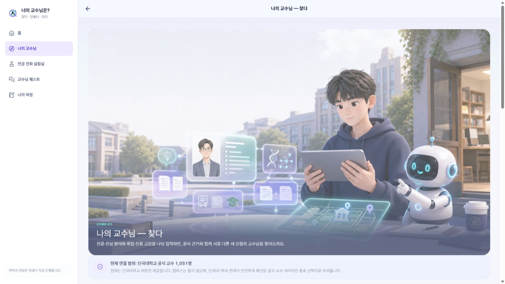
/professors → /professors/{id}
주제 관점
학생의 관심 문제와 교수의 공개 연구분야·논문을 대조
방법 관점
활용하려는 데이터·방법과 연결되는 근거를 분리
확장 관점
다른 전공·응용 맥락에서 확인할 질문을 제시
검증하며 발견한 것
발견 · ‘AI’ 한 단어로 관련성이 낮은 교수가 연결된 사례 원인 가설 · 넓은 키워드 일치 다음 게이트 · 학과·주제·방법 문턱과 오탐 회귀 표본 확대
표현 원칙 · 교수 우열·궁합·모집·면담 가능성을 추정하지 않으며 학생이 공식 원문을 직접 확인
교수 화면에서는 단국대 공식 교수 1,051명 범위 안에서 주제, 방법, 확장 관점이 다른 세 후보를 보여줍니다. 중요한 것은 순위가 아니라 왜 연결됐는지 공식 연구분야와 논문까지 확인하는 것입니다. 검증 과정에서 AI라는 단어 하나로 관련성이 낮은 교수가 포함된 사례를 발견했습니다. 아직 수정 완료라고 말하지 않고, 학과와 주제, 방법 일치 문턱과 오탐 회귀 표본을 다음 품질 게이트로 두었습니다.
검증 경계 · 발표에서 사용하는 교수 피드백과 대화 기록은 실제 면담 결과가 아닌 시연용 입력
교수님 퀘스트는 만나기 전, 대화 중, 만난 후에 필요한 행동을 다섯 도구로 나눕니다. 논문 한입, 첫마디, 침묵 구조대, 메일 점검, 다음 만남 씨앗입니다. 허브 화면은 작동하지만 실제 연락과 면담은 학생이 직접 진행하고, 서비스가 메일을 자동 발송하거나 대화를 자동 녹음하지 않습니다. 발표에서 보여주는 피드백은 실제 면담 성과가 아니라 시연용 데이터입니다.
MVP ⑤ · 화면 작동상태 연결 검증 중
포트폴리오는 결과보다 준비와 변화의 6단계를 남깁니다
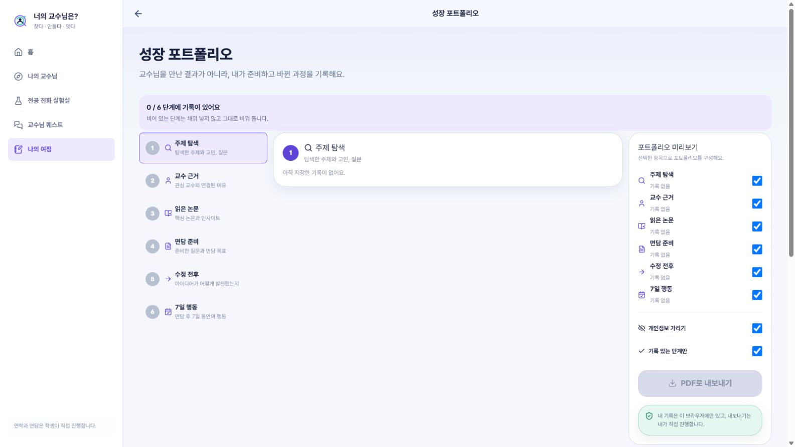
/portfolio · 성장 포트폴리오
1주제 탐색
2교수 근거
3읽은 논문
4면담 준비
5수정 전후
67일 행동
발견한 연결 문제
주제·교수 근거가 있어도 Mentor Loop가 다시 연결을 요구하거나, 완료한 퀘스트가 포트폴리오에 이어지지 않는 사례가 있습니다.
다음 완주 조건
수정 전후 연구안·7일 행동·확인 날짜가 저장, 재진입, PDF 내보내기까지 유지되어야 합니다.
현재 화면 · 새 브라우저 기준 0/6 기록 · 빈 단계는 그대로 비워 두며 완료 효과를 주장하지 않음
성장 포트폴리오는 교수를 만난 결과만 저장하는 화면이 아닙니다. 주제 탐색, 교수 근거, 읽은 논문, 면담 준비, 수정 전후, 7일 행동의 여섯 단계를 남깁니다. 새 브라우저에서는 아직 0/6으로 보입니다. 또한 주제와 교수 근거가 있어도 Mentor Loop가 다시 연결을 요구하거나 완료한 퀘스트가 기록으로 이어지지 않는 상태 계약 문제를 발견했습니다. 저장과 재진입, PDF 내보내기까지 이어지는 한 시나리오가 다음 완주 조건입니다.
MVP 중간 결론
대표 화면은 작동했고, 연결·품질 문제도 함께 드러났습니다
기능을 더 늘리기보다 확인된 것과 발견한 문제를 다음 통과 조건으로 바꾸겠습니다.
확인됨
대학생의 전공·교수 상담 장면을 타깃으로 설계
단국대 공식 교수 1,051명과 근거 상태 정규화
주제 생성·교수 탐색·퀘스트·포트폴리오 주요 화면 작동
검증하며 발견
기간 입력과 생성 범위 불일치
넓은 키워드로 인한 교수 연결 오탐
Mentor Loop·포트폴리오 상태 연결 결함
다음 통과 조건
학생 5명 사용성 과업 테스트 목표
교수·조교 2명 질문·메일 검토 목표
오탐 회귀검증과 배포·GitHub 기준 원본 정렬
01연구질문
→
02교수 연결
→
03Quest
→
04Portfolio
다음 4장에서 실제 화면 12컷으로 확인
현재 사용자 검증 · n=0 · 위 5명과 2명은 실적이 아니라 다음 검증 목표
확인된 것은 대학생 중심의 주요 화면과 단국대 공식 데이터 기반 교수 연결이 작동한다는 점입니다. 검증하며 기간 불일치, 키워드 오탐, 상태 연결 결함도 발견했습니다. 아직 실제 학생 효과는 확인하지 않았고 학생 다섯 명과 교수 또는 조교 두 명은 다음 검증 목표입니다. 이어지는 네 장에서 각 흐름을 실제 배포 화면 세 컷씩으로 짧게 보여드리겠습니다.
사진 시연 ① · 실제 배포본DEMO DATA
막연한 관심이 비교 가능한 연구 후보 두 개가 되기까지
식품자원경제학과 학생의 가상 조건으로 입력부터 결과까지 같은 브라우저에서 재현했습니다.
01
조건을 먼저 고정/research
관심뿐 아니라 전공·경험·방법·기간·데이터 접근을 먼저 정합니다.
→
02
한 질문씩 공동설계/co-design · 1/5
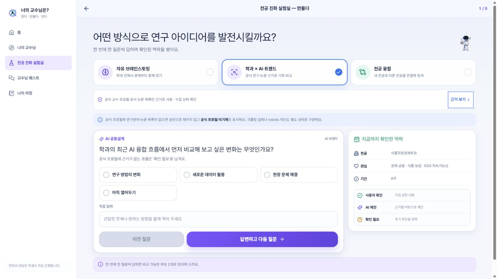
사용자 확인·AI 제안·확인 필요를 나누고 총 5번 맥락을 좁힙니다.
→
03
후보 둘을 같은 기준으로/result
숫자 점수 대신 방법·데이터·범위·불확실성을 나란히 비교합니다.
표현 경계
AI가 정답을 결정하지 않습니다. 독창성·실현 가능성을 보장하지 않으며, 입력한 8주가 후보 A의 4주 범위로 줄어든 결함도 재현됐습니다.
재현 조건 · 가상 학생 · 농림·식품 / 식품자원경제학과 / 문헌조사·데이터 분석 / 8주 / 공개 데이터
첫 번째 흐름은 연구질문 만들기입니다. 가상 학생의 전공, 관심, 경험, 방법, 기간과 데이터 접근을 고정하고 한 번에 한 질문씩 총 다섯 번 확인했습니다. 결과는 점수가 아니라 서로 다른 전략의 후보 두 개를 같은 기준으로 비교합니다. 동시에 8주 조건이 한 후보에서 4주로 줄어드는 결함도 재현되어 생성 뒤 제약 검증이 필요하다는 점을 확인했습니다.
사진 시연 ② · 실제 배포본DEMO DATA
공식 교수 근거에서 첫 대화 후보까지
서열을 만들지 않고 전공·관심·행동 목적을 공식 프로필과 공개 논문에 대조합니다.
01
연결 조건 입력/professors
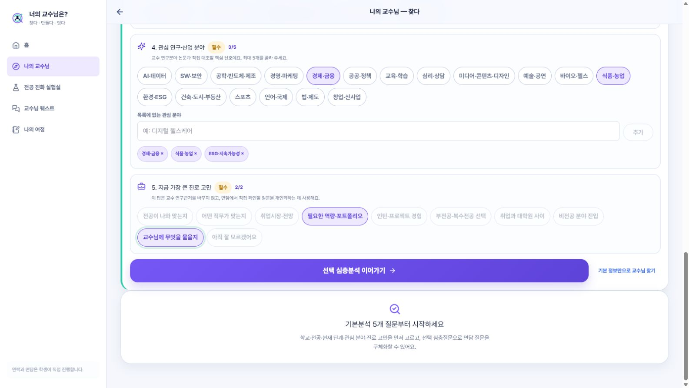
공식 교수 1,051명 안에서 전공·관심·도움 목적을 구조화합니다.
→
02
세 관점으로 피칭/professors/pitch
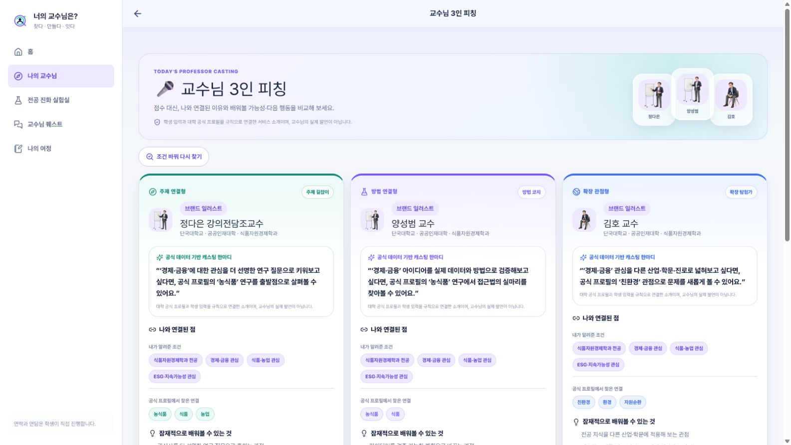
주제·방법·확장이라는 서로 다른 대화 관점을 한 화면에서 비교합니다.
→
03
논문까지 역추적/paper/reader
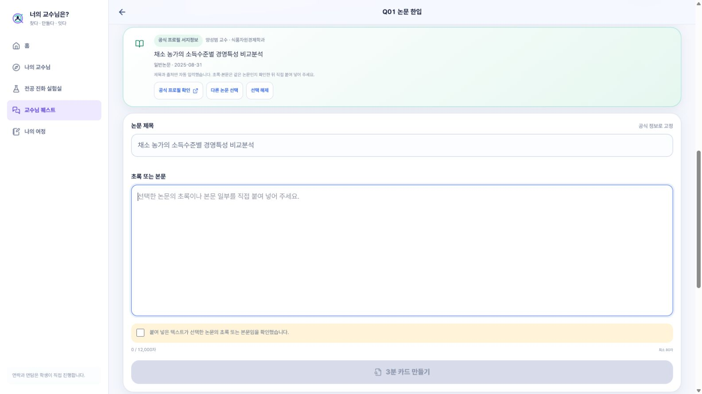
추천 이유를 공식 프로필과 공개 논문의 제목·발행일·공식 링크까지 거슬러 확인합니다.
표현 경계
연결 결과는 공개 근거와 학생 입력의 관계입니다. 교수의 실제 발언, 지도·모집·면담 가능성, 교수 간 우열을 뜻하지 않습니다.
공개 근거 · 단국대학교 교수 프로필 및 공개 논문 · 실제 교수 사진 대신 브랜드 일러스트 사용
두 번째 흐름은 교수 연결입니다. 단국대 식품자원경제학과와 가상 학생의 관심, 고민을 구조화하고 주제, 방법, 확장 관점의 세 후보를 보여줍니다. 양성범 교수의 경우 공식 프로필에서 수집된 논문을 선택하고 공개 제목과 발행일, 공식 링크로 되돌아갈 수 있습니다. 이 연결은 교수의 실제 발언이나 지도 가능성, 우열을 뜻하지 않습니다.
사진 시연 ③ · 실제 배포본연결 문제 재현
“어떻게 말을 걸지?”를 작은 행동 도구로 바꿨습니다
작동하는 도구와 아직 끊기는 연결을 같은 시연 흐름에서 함께 보여드립니다.
01
다섯 행동 중 선택/quest
논문·첫마디·후속 질문·메일·다음 행동을 작은 도구로 나눕니다.
→
02
첫 문장 세 안 만들기/quest/first-line
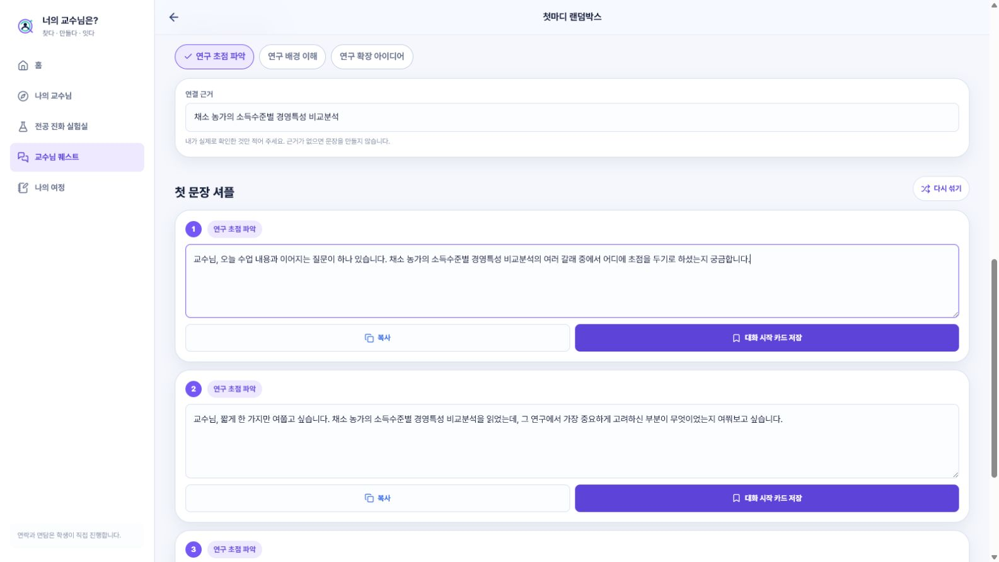
학생이 확인한 논문 한 건을 근거로 수정 가능한 첫 문장을 준비합니다.
↛
03
후속 기록에서 끊김/mentor-loop
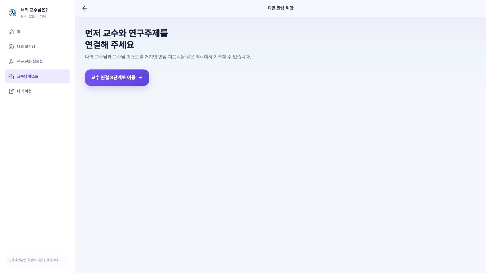
교수·논문을 선택했어도 일부 경로가 다시 연결을 요구하는 상태 문제를 확인했습니다.
현재 경계
앱은 준비·검토·기록만 돕습니다. 자동 발송·면담 녹음·교수 성격 추정을 하지 않으며, 실제 연락과 면담은 학생이 직접 진행합니다.
발견한 원인 가설 · 교수·논문·Quest·Mentor Loop 사이 상태 계약과 재진입 복구 규칙 불일치
세 번째 흐름은 교수님 Quest입니다. 허브에서 만남 전후의 다섯 행동 도구를 고르고, 선택한 공개 논문을 근거로 첫 문장 세 안을 만듭니다. 다만 같은 브라우저에서 교수와 논문을 선택했는데도 Mentor Loop가 다시 연결을 요구하는 상태 문제를 재현했습니다. 시연이 되는 화면만 골라 보여주기보다, 다음 개발 우선순위가 된 연결 결함까지 함께 공개합니다.
사진 시연 ④ · 실제 배포본DEMO DATA
포트폴리오는 결과보다 준비와 변화의 흔적을 남깁니다
현재 브라우저에 실제로 이어진 기록만 표시하고, 빈 단계는 채워 넣지 않습니다.
01
기록 단계 확인/portfolio · 2/6
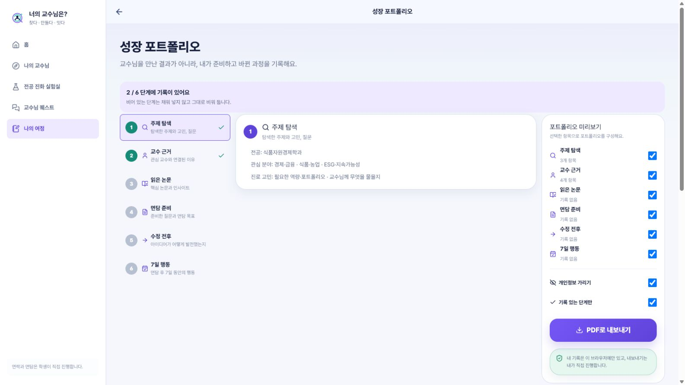
주제 탐색과 교수 근거만 기록된 현재 상태를 2/6으로 표시합니다.
→
02
근거와 직접 확인점교수 근거 단계
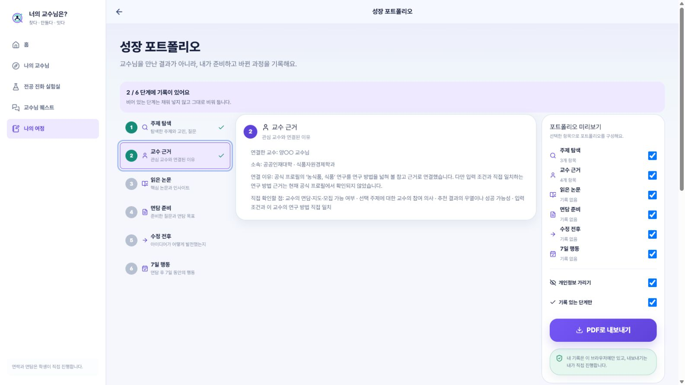
연결 이유와 한계를 함께 남기고 교수 이름은 양○○으로 가립니다.
→
03
선택적으로 내보내기미리보기
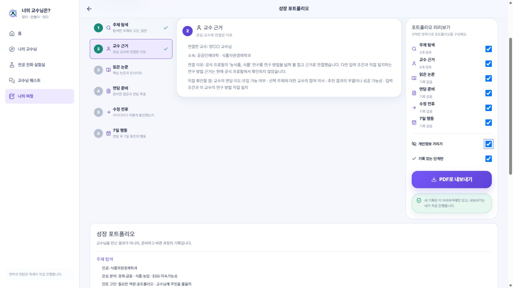
개인정보 가리기와 기록 있는 단계만을 켠 뒤 사용자가 직접 내보냅니다.
수치 경계
2/6은 성과율이 아니라 이 브라우저에 기록이 존재하는 단계 수입니다. 실제 교수 면담 성과를 의미하지 않으며, Quest·Mentor Loop 연결은 아직 OPEN입니다.
현재 데모 기록 · 주제 탐색·교수 근거 2단계 · 실제 이름·학번·이메일·면담 기록 미사용
네 번째 흐름은 성장 포트폴리오입니다. 같은 브라우저에서 주제 탐색과 교수 근거 두 단계가 연결되어 2/6으로 표시됐습니다. 교수 이름은 가리고 연결 이유와 직접 확인할 점을 함께 남깁니다. 개인정보 가리기와 기록 있는 단계만 옵션을 켜서 사용자가 직접 내보낼 수 있습니다. 이 2/6은 성과율이 아니라 기록 존재 단계 수이며 Quest와 Mentor Loop의 연결은 아직 열려 있습니다.
저희의 성장 과정은 기능 수가 늘어난 과정이 아닙니다. 처음에는 세 아이디어와 점수형 추천, 가상 교수 후보가 중심이었습니다. 팀 결정으로 후보 두 개의 정성 비교로 좁혔고, 멘토링을 계기로 제품의 끝점을 교수와의 실제 행동까지 옮겼습니다. 공식 교수 데이터를 연결하고 논문을 질문과 면담 준비 도구로 바꾼 뒤, E2E와 모바일, 수집기와 빌드 증거로 확인했습니다. 이제 사용자 검증과 A4 출력, 오탐과 예외 경로는 완료로 포장하지 않고 OPEN으로 남겨두고 있습니다.
SELF CHECK · NOT FIXED YET중간점검 현재
발견한 문제는 숨기지 않고, 수정 예정과 통과 조건까지 적었습니다
아래 네 항목은 재현했지만 아직 해결하지 못했습니다. 발표 이후 우선순위대로 수정·검증합니다.
P0
상태 연결
선택한 교수·논문 유실
발견
선택한 교수·논문 대신 이전 즐겨찾기·논문이 다음 화면에 노출됨
수정 예정
주제·교수·논문·Quest를 탐색 ID 하나로 묶고 변경 시 하위 초안 초기화
통과 조건
논문 한입·첫마디·Mentor Loop·Portfolio의 교수·논문 ID 전부 일치
P1
생성 제약
8주 입력이 4주로 축소
발견
8주 조건을 입력했지만 후보 한 개가 4주 단독 수행 범위로 생성됨
수정 예정
생성 뒤 기간·방법·데이터 접근 조건을 다시 검사하는 제약 검증 추가
통과 조건
고정 시나리오와 반례 표본에서 입력 조건 불일치 0건
P1
매칭 품질
키워드 오탐·근거 공백
발견
선택하지 않은 ‘AI·텍스트 분석’이 방법 연결 이유로 사용되는 오탐 재현
수정 예정
학생 입력 → 공식 근거 → 배울 가능성 3단 검증, 근거가 약하면 후보 부족 허용
통과 조건
대표·부정 회귀 표본에서 오탐 0건과 모든 연결 이유의 공식 URL 역추적
P2
진입·복구
논문 접근·긴 모바일 흐름
발견
초록 80자 직접 입력이 필요하고 모바일 결과 페이지가 약 6,771px까지 길어짐
수정 예정
공식·DOI·도서관 경로, 별도 교수 피칭 페이지, 새 탐색·이어하기 카드 제공
통과 조건
본문 미확보 복구·390px 핵심 CTA·새 탐색과 이어하기 분리를 함께 확인
상태 기준 · 배포본 재현 ≠ 로컬 수정 ≠ 배포 완료 · 같은 E2E 회귀 테스트를 통과한 뒤 완료 판정
작동한 화면과 별개로 아직 배포본에 남아 있는 문제도 네 가지로 정리했습니다. 가장 먼저 선택한 교수와 논문이 다음 화면에서 이전 기록으로 바뀌는 상태 무결성 문제를 고치겠습니다. 다음으로 8주가 4주로 줄어들면서도 확인됨으로 표시되는 생성 제약과, 선택하지 않은 AI·텍스트 분석이 연결 이유로 등장한 키워드 오탐을 검증합니다. 논문 초록을 학생이 직접 찾아 붙여야 하는 진입 부담과 모바일에서 결과 페이지가 지나치게 긴 문제도 별도 피칭 페이지와 복구 경로로 보완하겠습니다. 재현, 로컬 수정, 배포 완료를 구분하고 같은 E2E 회귀 테스트를 통과한 뒤에만 완료로 바꾸겠습니다. 실제 사용자 검증은 현재 0명입니다.
MENTOR CHECK · USER FLOW
이 순서가 학생의 첫 연구 대화까지 자연스러운지 확인받고 싶습니다
화면의 완성도보다 단계 순서·생략 가능한 구간·제품의 끝점이 적절한지 피드백을 받고 싶습니다.
01 · START
고민·조건 입력
전공·관심·방법·기간
작동→02 · 만들다
연구 후보 2개
같은 기준으로 정성 비교
제약 검증 필요→03 · 찾다
교수 3인 피칭
본교 주전공 2 + 타학과 1
분리·오탐 검증→04 · 잇다
논문·첫마디
공식 근거 → 첫 질문
상태 연결 필요→05 · 현실 행동
학생이 직접 대화
연락·면담은 자동화하지 않음
서비스 밖→06 · 반영
Mentor Loop
조언 → 수정·7일 행동
연결 수정 예정→07 · 기록
포트폴리오
변화·근거·다음 행동
현재 2/6
플로우 핵심 질문학생이 멈추거나 건너뛸 단계는 어디이며, 실제 대화 전후의 순서가 행동과 맞나요?작동 1 · 일부/검증 3 · 수동 1 · OPEN 2
01
타깃·진입
‘첫 연구 대화를 준비하는 대학생’으로 좁힌 시작점이 적절한가요?
02
교수 제시
본교 주전공 교수 2명 + 같은 학교 타학과 1명 구성이 적절한가요?
03
근거·단계 수
면담 질문에 쓸 최소 공식 근거와 생략해도 되는 단계는 무엇인가요?
04
끝점·성과
수정 연구안·7일 행동·후속 연락 중 무엇을 중심 성과로 볼까요?
확인 목적 · 기능 승인보다 사용자 흐름·정보량·행동 끝점에 대한 멘토 피드백 요청 · 사용자 검증 n=0
현재 저희가 설계한 흐름은 고민과 조건을 입력하고 연구 후보 두 개를 비교한 뒤, 본교 주전공 교수 두 명과 같은 학교 타학과 교수 한 명을 별도 피칭 화면에서 확인하고 논문 근거로 첫 대화를 준비하는 순서입니다. 실제 연락과 면담은 학생이 직접 진행하고, 이후 Mentor Loop에서 조언을 수정안과 7일 행동으로 바꿔 포트폴리오에 남깁니다. 다만 제약과 오탐 검증, 선택한 교수·논문의 상태 연결, 포트폴리오 기록은 아직 배포본에서 완주 검증 전입니다. 멘토님께는 이 순서가 실제 학생 행동과 맞는지, 불필요하거나 생략 가능한 단계가 있는지, 그리고 타깃·2+1 교수 제시·최소 근거·핵심 성과의 네 지점을 확인받고 싶습니다.
LIVE MVP · QRDEMO DATA 권장
중간발표까지 저희가 만든 MVP를 확인해 보실 수 있습니다
카메라로 QR을 스캔하거나 아래 주소를 입력하면 배포된 화면으로 이동합니다.
01연구질문 · 조건 입력 → 후보 2개 비교
02교수 근거 · 후보 3관점 → 공식 논문 확인
03Quest · 첫마디 준비 → 연결 문제 확인
04포트폴리오 · 현재 기록 2/6과 내보내기 미리보기
체험 안내
발표 시연과 동일하게 가상 학생 조건을 사용해 주세요. 실제 이름·학번·이메일 등 개인정보 입력은 피해주세요.
배포 주소 · https://major-evolution-homepage-j1vp.vercel.app/ · 네트워크 연결 필요
마지막으로 중간발표까지 저희가 만든 MVP를 확인해 보실 수 있도록 QR을 준비했습니다. 시간이 허락하면 연구질문 후보 비교, 교수 근거 확인, Quest의 첫마디 준비와 연결 문제, 포트폴리오 2/6 상태 순서로 보시면 됩니다. 발표 시연은 가상 학생 조건과 공개 교수 근거를 사용했으며 실제 개인정보는 입력하지 않으시길 부탁드립니다. QR이 인식되지 않으면 화면 아래 주소로 접속하실 수 있습니다.